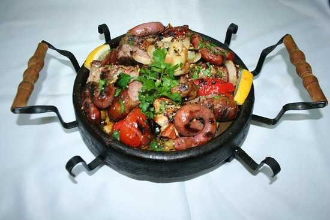
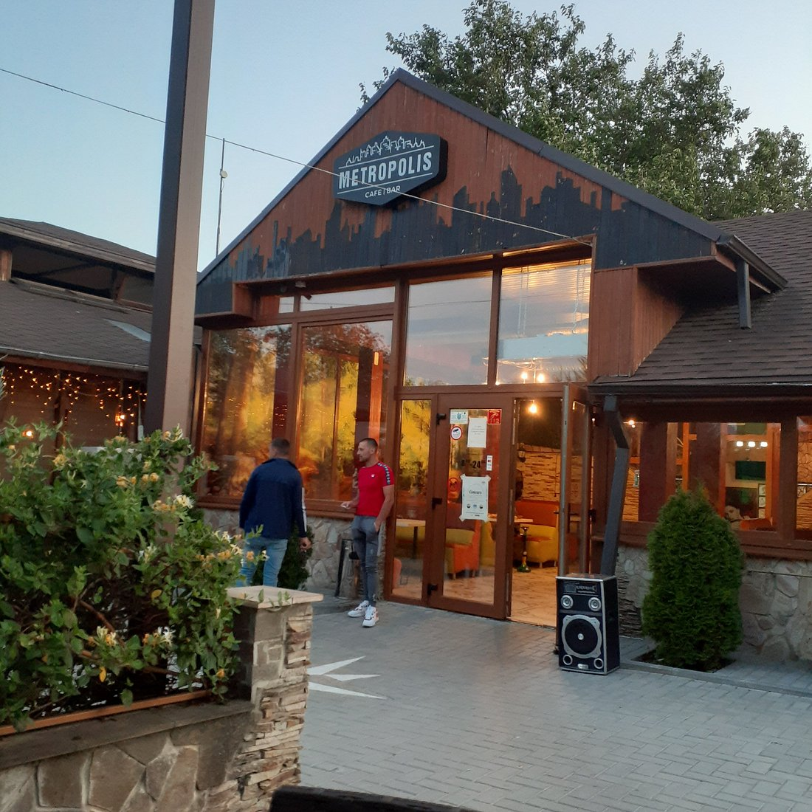
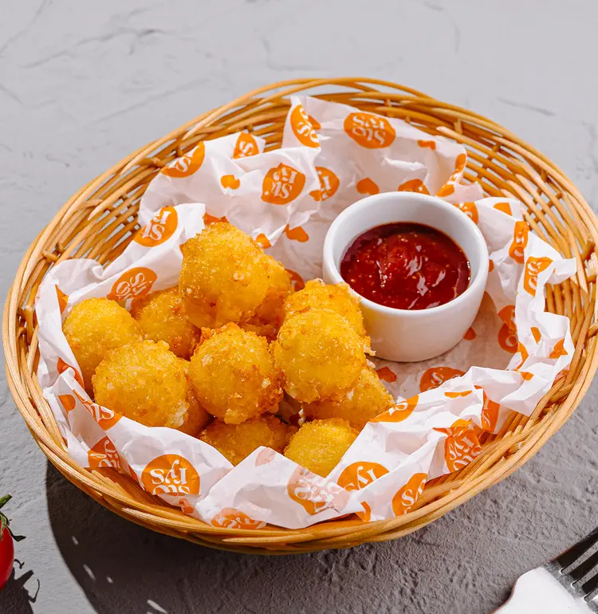

Лучшие рестораны Кахула

Marco Polo
Молдавская кухня
Европейская кухня
Выпечка
Традиционный молдавский ресторан с уютной атмосферой и домашней кухней. Обязательно попробуйте плацинду и зама!
Перейти на Marco Polo

Metropolis
Национальная кухня
Гриль
Винотека
Ресторан с национальным колоритом, предлагающий блюда молдавской кухни по старинным рецептам. Большой выбор местных вин.
Instagram Metropolis

Storys
Итальянская кухня
Пицца
Паста
Уютное кафе с вкусной пиццей из дровяной печи и другими итальянскими блюдами. Быстрое обслуживание и демократичные цены.
Перейти на Storys